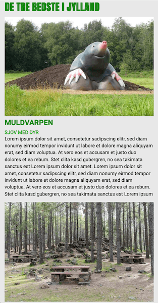
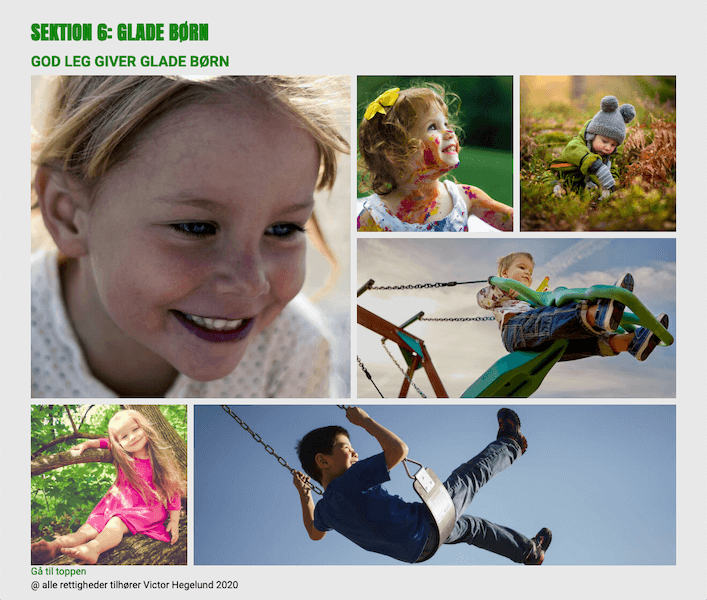
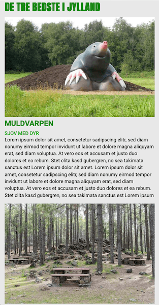
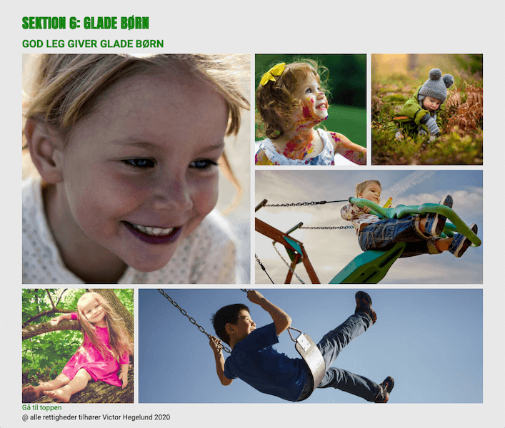

Responsive site
Hjemmeside i digital retro-design (90'erne)
Hjemmeside i digital retro-design (90'erne)
 



Jeg har fået tildelt stilarten digital retro-design. Sammen med de andre, der også har fået denne stilart, har jeg lavet en præsentation af stilen. Du kan se den her.
Jeg starter med at designe hjemmesidens udseende i Adobe Xd. Jeg har designet både en mobilversion og en version til computer.
Jeg bruger grid i designet for at skabe en rød tråd igennem det hele.
I head-tagget i HTML'en har jeg indsat "noindex", "title", "favicons" samt linket til et stylesheet-dokument.
Jeg har brugt media query i min CSS for at gøre hjemmesiden responsiv. Alt, hvad der står i media query'en, gælder for desktop-version. F.eks. får section og footer en padding på 50px i top og bund, når man ser websitet fra en computer.